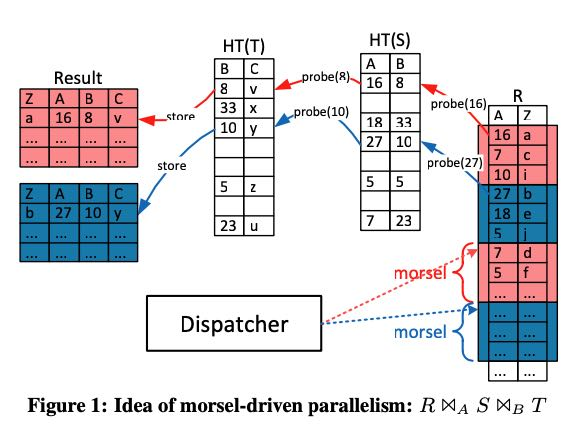
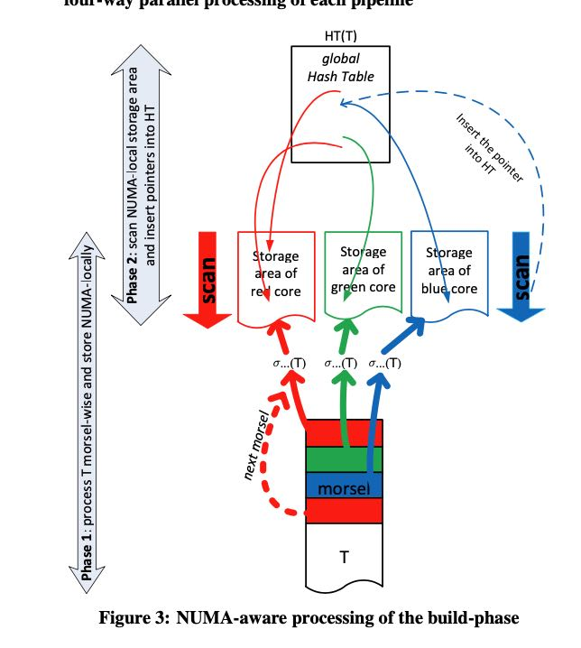
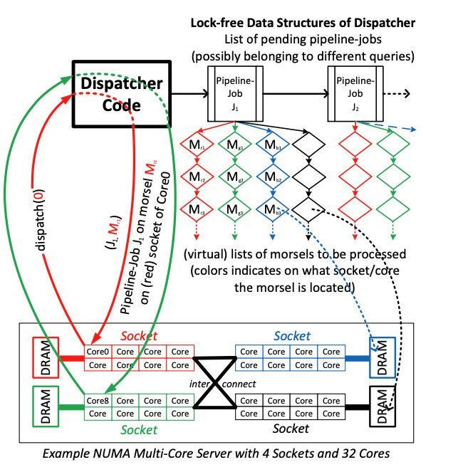
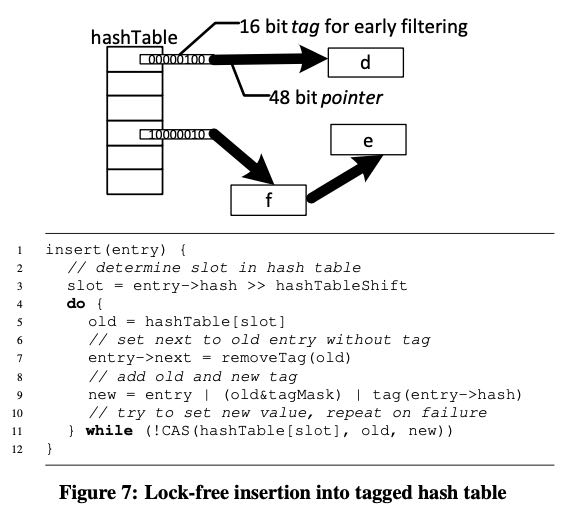
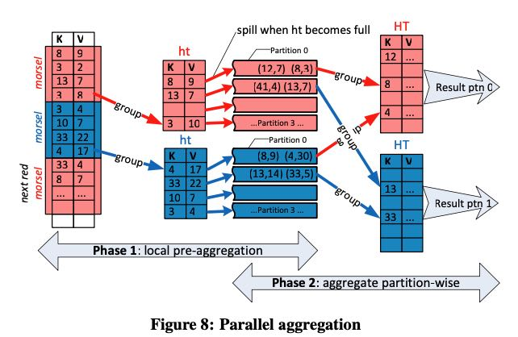
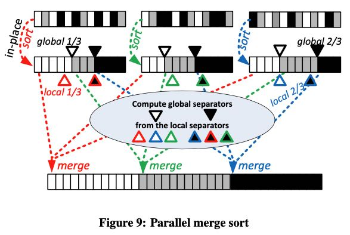

Morsel-Driven Parallelism: A NUMA-Aware Query Evaluation Framework for the Many-Core Age
https://db.in.tum.de/~leis/papers/morsels.pdf
这个调度框架主要解决如何在多核上进行有效的任务调度，充分利用好NUMA这个特性，所以它也是单机上的一个调度系统。单词Morsel中文解释是“一小撮”，所以也可以认为是数据chunk. 整体的思路就是，执行单元(Thread)上执行的任务(task)尽可能地和chunk所在的CPU slot放在一起，以便充分利用好NUMA.
我的整体感觉就是，如果把numa-aware换成datanode-aware, 把morsel换成data chunk by partition, 设计考虑和分布式调度系统没有什么太大差别，就是要将计算放在数据节点上，如果数据不均匀的话就要做re-partition。可能唯一不同的就是，在处理慢节点的时候，它可以使用work stealing的方式，而分布式调度系统可能使用backup node.
这个调度框架也是针对数据库系统设计的。因为现在大内存服务器越来越多，所以好多数据库系统已经完全是内存型数据库了，IO不在是瓶颈，而Memory Bandwidth才是。另外大内存系统可以避免地需要使用NUMA来有效地访问内存，所以NUMA-Aware这个东西是非常必要的，而过去大家使用Vocalno并行模型没太考虑这点，
整个调度框架内有个Dispatcher（机制）用来进行调度，后面会讲到这个dispatcher并不是个执行单元，更像是某个共享的lock-free数据结构。每个working thread都会使用对这个数据结构进行操作，从里面拿到某个task执行。每个task几乎只处理自己所在cpu slot上的一小块数据(morsel)，除非要做work stealing可能涉及到跨cpu slot. 下图是文中给的一个示例，其中T和S都做了build, 是global hashtable. 表R进行scan + probe, 注意表R按照morsel进行了划分，并且result也是按照morsel进行划分的。probe这个过程不涉及到任何synchronization.

但是有时候synchronization是不可避免的，比如build hashtable. 在scan t的时候不需要sync, 但是每个morsel会生成一个storage aread of per core, 这可以认识是个小的hash table. 现在需要将这些hash table聚合起来，整个过程是两个阶段。当然其实有可以切分为一个阶段，直接构建hash table. 但是分解成为两个阶段的好处是，在这里做个sync可以根据每个小的hash table确定global hash table的best size. 然后构建这个global hash table是lock-free operation(CAS). 这个后面会提到。

调度器架构图如下：Pipeline Jobs被挂在成为一个链表，每个Job下面有许多tasks(morsels). 整个系统先开一些work threads, 然后每个work thread去dispatcher上去要morsel来执行。通常只能要自己slot上的morsel, 但是有时候为了load balance也允许去steal其他slot上的Morsel. 我们在这里还可以修改dispatcher, 支持preemption（因为task input data足够小）以及选择high priority job执行。
We (pre-)create one worker thread for each hardware thread that the machine provides and permanently bind each worker to it. Thus, the level of parallelism of a particular query is not controlled by creating or terminating threads, but rather by assigning them particular tasks of possibly different queries. A task that is assigned to such a worker thread consists of a pipeline job and a particular morsel on which the pipeline has to be executed. Preemption of a task occurs at morsel boundaries – thereby eliminating potentially costly interrupt mechanisms. We experimentally determined that a morsel size of about 100,000 tuples yields good tradeoff between instant elasticity adjustment, load balancing and low maintenance overhead.
There are three main goals for assigning tasks to threads that run on particular cores:
- Preserving (NUMA-)locality by assigning data morsels to cores on which the morsels are allocated
- Full elasticity concerning the level of parallelism of a particular query
- Load balancing requires that all cores participating in a query pipeline finish their work at the same time in order to prevent (fast) cores from waiting for other (slow) cores .

在执行上尽可能确保job下面的tasks在同一个时间完成，在论文里面叫做"photo finish". 这个事情没有办法在静态规划阶段就完成，所以就需要work stealking，虽然这个东西会影响到numa locality, 但是benefit比cost要大很多。按照morsel划分的话，除了好做load-balancing之外，canel也比较好做。只要cacenl这个job的话，那么剩余的tasks就不需要执行了。
Besides the ability to assign a core to a different query at any time – called elasticity – the morsel-wise processing also guaran- tees load balancing and skew resistance. All threads working on the same pipeline job run to completion in a “photo finish”: they are guaranteed to reach the finish line within the time period it takes to process a single morsel. If, for some reason, a core finishes processing all morsels on its particular socket, the dispatcher will “steal work” from another core, i.e., it will assign morsels on a dif- ferent socket. On some NUMA systems, not all sockets are directly connected with each other; here it pays off to steal from closer sock- ets first. Under normal circumstances, work-stealing from remote sockets happens very infrequently; nevertheless it is necessary to avoid idle threads. And the writing into temporary storage will be done into NUMA local storage areas anyway (that is, a red morsel turns blue if it was processed by a blue core in the process of steal- ing work from the core(s) on the red socket).
到此为止，论文主要思想就说完了，接下来就是operator的具体实现。我觉得下面三个比较有意思：
- build hash table
- grouping + agg
- sorting
HashTable实现是个外链的hashtable, 因为size是精心选择过的，所以冲突会比较少，外链也会比较短。Hashtable里面存储的是64bit指针，但是实际在x86-64里面只使用了low 48bits. https://en.wikipedia.org/wiki/X86-64 high 16bits可以用来做个early filtering. 我的理解就是把这个16bits当做bloom filter来用，进来一个hash value, 做个 (tag & (1 << (value % 16)) 判断. 内存分配的时候用2MB hugepage, 尽可能地将pagetable放在L1 cache里面，减少TLB时间

grouping + agg 过程如下，两个阶段：local agg + global agg. 第一阶段的ht是个小的hash table, 一旦溢出了就写入local storage的partition. 第二个阶段就涉及到shuffle. 理论上这两个阶段可以pipeline, 但是中间也做了breaker. 我的理解是，一方面可以确定每个partition最终的HT perferce size, 另外一方面是既然每个阶段都是photo stop的，分开意义也不是很大。

Sorting也类似经典的分布式sort. 首先做local sort, 然后对每个partition的local array做个sketch判断全局的separators, 最后每个worker选择一个global separator去每个partition要数据做merge. 这个算法概念很清晰，但是怎么选择好global separator没有想好怎么做。
